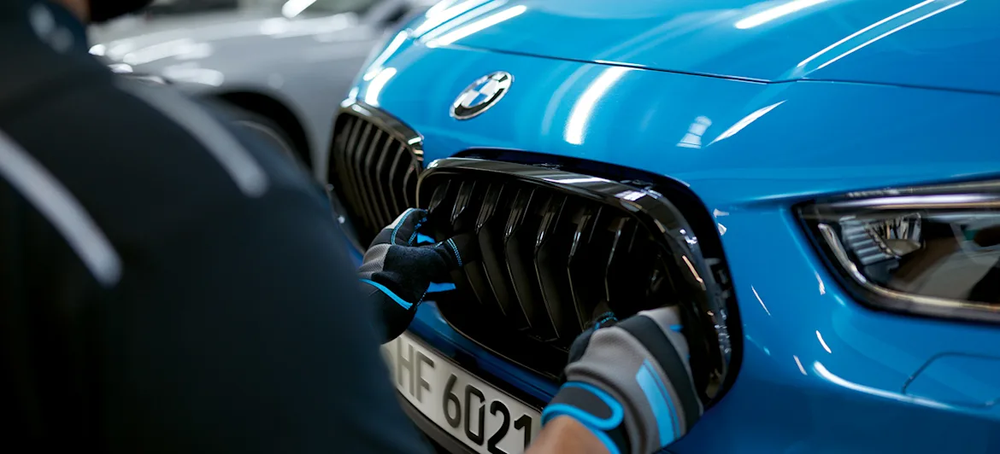
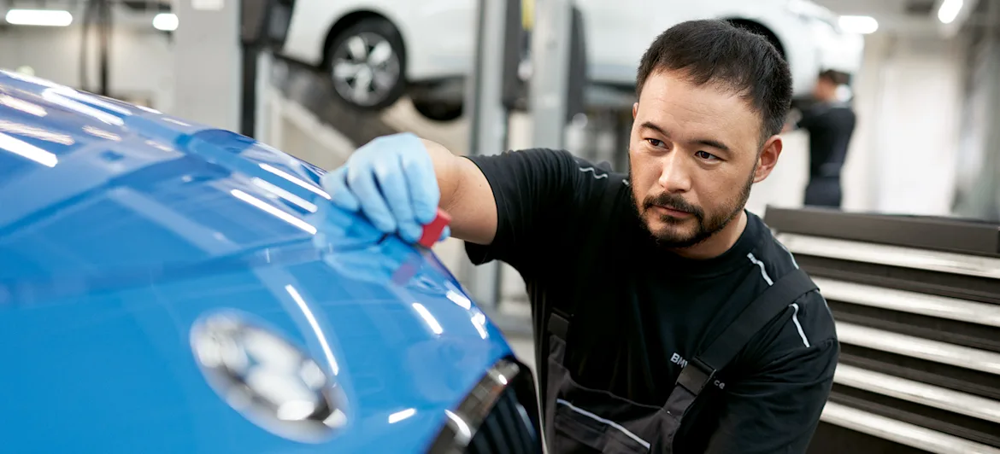

BẠN ĐỒNG HÀNH ĐÁNG TIN CẬY NHẤT LÀ NGƯỜI ĐẾN BÊN TÔI NGAY KHI CẦN
NIỀM TIN LÀ CHUẨN MỰC. BMW ROADSIDE ASSISTANCE.
Đặt hẹn trực tuyến ngayLỰA CHỌN CHẤT LƯỢNG ĐỐI VỚI VIỆC CHĂM SÓC VÀ SỬA CHỮA BMW.
Dù là một vết xước nhỏ, hay thậm chí là những hư hại lớn sau tai nạn, đều ảnh hưởng đến trải nghiệm lái của Quý khách. Tuy nhiên, trước bất kỳ sự cố nào, các chuyên gia kỹ thuật tại Trung tâm dịch vụ đồng sơn BMW sẽ luôn đồng hành cùng Quý khách. Chắc chắn, chiếc xe của Quý khách sẽ được phục hồi tình trang hoàn hảo như ban đầu. Bởi vì, không ai có thể hiểu về chiếc BMW của Quý khách như chúng tôi.
LỢI ÍCH NỔI BẬT.
01 Duy trì giá trị xe nhờ quy trình sửa chữa đạt chuẩn.
02 Xe được trải qua tất cả các bước kiểm tra an toàn.
03 Chất lượng hoàn hảo.
04 Quy trình nhanh và mượt mà.
05 An tâm tận hưởng dịch vụ chăm sóc xe tận tình nhất.
XƯỞNG DỊCH VỤ ĐỒNG SƠN ĐẠT TIÊU CHUẨN BMW.
Lựa chọn Dịch vụ sửa chữa với công nghệ chẩn đoán và kiểm tra hiện đại. Các tiêu chuẩn của chúng tôi đóng vai trò là nền tảng cho các Trung tâm dịch vụ ủy quyền đồng sơn BMW, đảm bảo các yêu cầu nghiêm ngặt về mặt chất lượng. Các chuyên gia sẽ đảm bảo duy trì giá trị xe BMW với phụ tùng và đồng sơn chính hãng BMW. Áp dụng đối với hai loại xe: BMW có động cơ đốt trong và xe điện.
Tìm trung tâm dịch vụ BMW của quý kháchDỊCH VỤ SỬA CHỮA SAU VA CHẠM.
Sự cố va chạm không mong muốn là điều luôn có thể xảy ra. Tuy nhiên, với sự hỗ trợ chuyên nghiệp và nhanh chóng, Quý khách có thể an tâm vì các chuyên gia kỹ thuật BMW sẽ luôn đồng hành. Dù xảy ra những thiệt hại phức tạp đối với thân xe, bề mặt sơn xe, hệ thống điện hoặc hệ thống an toàn xe. Chiếc xe của Quý khách sẽ được khắc phục với chuyên môn của đội ngũ chuyên gia kỹ thuật, phụ tùng BMW chính hãng và quy trình sửa chữa theo tiêu chuẩn BMW. Điều này không những khôi phục diện mạo cuốn hút cho xe, mà tất cả các chức năng trên xe đều được vận hành hoàn hảo.
Dịch vụ sửa chữa thân vỏ.
Thân xe đóng vai trò rất quan trọng đối với sự an toàn của người lái xe. Nếu xảy ra tai nạn dẫn đến hư hỏng nghiêm trọng, trước tiên, bằng việc sử dụng các công cụ chẩn đoán và phân tích hiện đại, các chuyên gia kỹ thuật sẽ xác định mức độ hư hỏng của xe, sau đó khôi phục chiếc xe của Quý Khách về đúng tình trạng.
Dịch vụ sửa chữa sơn xe.
Để khắc phục hư hại đối với bề mặt sơn, các chuyên gia kỹ thuật BMW sử dụng công nghệ đánh bóng sơn mới nhất, sơn gốc nước đạt chuẩn BMW thân thiện với môi trường. Để duy trì độ bền cho bề mặt sơn và giá trị chiếc BMW, các chuyên gia kỹ thuật BMW cam kết mang đến độ chính xác trong việc sử dụng màu sơn, tuân thủ các tiêu chuẩn sửa chữa và đồng sơn mới nhất của BMW.
DỊCH VỤ SỬA CHỮA VÀ CHĂM SÓC XE BMW.
Một khiếm khuyết nhỏ cũng cần một kỹ năng tinh xảo. Vì vậy, chúng tôi mang đến Quý khách Dịch vụ sửa chữa sơn xe BMW. Dù chỉ là một vết xước nhỏ trên bề mặt sơn, hoặc vết rách trên vỏ bọc ghế, các chuyên gia kỹ thuật BMW đều khắc phục một cách nhanh chóng và đơn giản nhất nhờ vào công nghệ sửa chữa hiện đại. Chắc chắn rằng, chiếc BMW của Quý khách sẽ luôn giữ được vẻ đẹp nguyên bản, đạt chuẩn BMW.
Dịch vụ sửa chữa kính BMW.
Chỉ một viên đá nhỏ cũng có thể gây ra hư hỏng nặng. Một vết sứt mẻ dường như rất nhỏ cũng có thể nhanh chóng trở thành một vết nứt lớn trên kính chắn gió, làm ảnh hưởng đến sự an toàn của Quý khách. Tuy nhiên, dù vết sứt mẻ khó có thể nhìn thấy, các chuyên gia BMW đều có thể sữa chữa một cách chính xác và nhanh chóng.
Sửa chữa vết móp xe ô tô.
Sau những chuyến đi, liệu có để lại hư hỏng nào trên bề mặt xe của Quý khách? Các chuyên gia kỹ thuật BMW sẽ luôn đồng hành, hỗ trợ Quý khách loại bỏ các vết lõm (đường kính có thể lên đến 60mm) trên thân xe. Nhờ kỹ thuật loại bỏ vết lõm hiện đại, chắc chắn không làm ảnh hưởng đến bề mặt sơn trong quá trình sửa chữa.
Khắc phục vết đốm trên xe.
Các chuyên gia kỹ thuật sẽ loại bỏ những vết sơn bị hư hại (đường kính dưới 25 mm) ở mặt ngoài và gần các cạnh, cũng như những vết trầy xước (chiều dài dưới 100 mm) một cách nhanh chóng và chính xác. Nhờ vào quy trình xử lý đặc biệt, không nhất thiết phải tách các bộ phận trong quá trình sửa chữa.
Sửa chữa phần vỏ nhựa.
Chỉ một khoảnh khắc mất tập trung khi đỗ xe đều có thể dẫn đến hư hỏng trên vành bánh xe. Các chuyên gia BMW sẽ sửa chữa hư hỏng ở vành bánh xe (độ sâu tối đa là 1 mm với khoảng cách không quá 5 cm tính từ mép vành) bằng cách sử dụng chất trám hiện đại, sau đó tiến hành sơn với sự kết hợp màu hoàn hảo đối với chiếc BMW của Quý khách.
Sửa chữa mâm xe BMW.
Chỉ một khoảnh khắc mất tập trung khi đỗ xe đều có thể dẫn đến hư hỏng trên vành bánh xe. Các chuyên gia BMW sẽ sửa chữa hư hỏng ở vành bánh xe (độ sâu tối đa là 1 mm với khoảng cách không quá 5 cm tính từ mép vành) bằng cách sử dụng chất trám hiện đại, sau đó tiến hành sơn với sự kết hợp màu hoàn hảo đối với chiếc BMW của Quý khách.
Dịch vụ chăm sóc nội thất.
Dù là vết rách trên ghế, hay chỉ là vết trầy xước nhỏ trên bộ điều khiển, chúng tôi đều loại bỏ được tất cả khiếm khuyết này. (Đường kính dưới 15 mm hoặc chiều dài dưới 40 mm). Quý khách có thể yên tâm vì cả những vết bẩn hoặc những điểm bị phai màu trên xe đều được khắc phục.
DỊCH VỤ CHĂM SÓC VÀ SỬA CHỮA BMW: NHỮNG CÂU HỎI VÀ ĐÁP QUAN TRỌNG NHẤT.
Gói sửa chữa sau tai nạn bao gồm những gì ?
Nếu chiếc BMW đang trong quá trình sửa chữa sau tai nạn, Trung tâm dịch vụ Đồng sơn ủy quyền BMW sẽ nhanh chóng khắc phục và đem lại diện mạo tối ưu nhất cho xe. Để xác định mức hộ hư hại của xe, chúng tôi ứng dụng công nghệ chẩn đoán và phân tích hiện đại nhất. Kèm theo đó là kỹ thuật sửa chữa tiên tiến, phụ tùng BMW chính hãng với chất lượng phù hợp nhất, mang lại vẻ đẹp như mới cho chiếc BMW của Quý khách.
Khi nào là thời điểm thích hợp để sử dụng Dịch vụ sửa chữa và chăm sóc nội ngoại thất?
Kính cửa sổ: Các vết sứt mẻ nhỏ (đường kính dưới 5 mm) trên kính chắn gió. Bên ngoài hoặc cạnh tầm nhìn của người lái.
Vết lõm: Xuất hiện các vết lõm (đường kính dưới 60mm). Không có bất kỳ hư hỏng gì đối với màu sơn ban đầu.
Đồng sơn: Vết trầy xước và sứt mẻ nhỏ. (Đường kính dưới 25mm và chiều dài dưới 100mm)
Nhựa: Các vết trầy xước, nứt hoặc lỗ nhỏ với đường kính dưới 25mm.
Vành bánh xe: Bề mặt bị hư hỏng có độ sâu tối đa là 1 mm. Cách mép vành không quá 5 cm.
Nội thất: Các vết bẩn hằng ngày để lại trên da hoặc nội thất, chẳng hạn vết trầy, xước hoặc vết rách. Đối với các vết xước có đường kính dưới 15 mm hoặc chiều dài dưới 40 mm.
Màu sơn đạt chuẩn BMW là gì?
Màu sơn đạt chuẩn BMW đảm bảo độ chính xác tuyệt đối của màu sắc và mang lại độ bền cho xe. Các chuyên gia luôn tuân thủ các tiêu chuẩn đồng sơn BMW mới nhất, đồng thời ứng dụng các công nghệ đánh bóng sơn hiện đại để lấy lại sự sáng bóng cho chiếc BMW của Quý khách. Màu sơn đạt chuẩn BMW sử dụng sơn gốc nước thân thiện với môi trường, đảm bảo sự phù hợp hoàn hảo với màu sơn gốc.